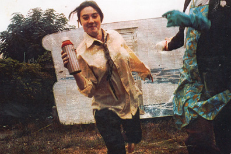

| | username // |
berry
| | real name // |
Vanessa Berry
| | picture // |

| | blurb // |
Vanessa Berry is committed to observing things in great detail, and making notes about them.
Some of these notes turn into stories, and they appear in her zine I am a Camera. Some of these notes end up in the long standing project Laughter and the Sound of Teacups, which is an account of what Vanessa does on the 23rd day of every month. Over the past six years she has created more zines than even she can count, and has made a commitment to entertain and inform, to value imagination and idiosyncrasies. She wants to inspire people to remember events and days as more than outlines, to make note of the details that might otherwise be forgotten.
| | web address // |
-
| | age // | age not supplied
| | creative stuff // |
| | email // |
email Vanessa
|
|
|